UNIT 15 · VOCABULARY
房子與公寓
Houses & apartments
53 個單字聽・唸・用
本單元單字一覽
房子的各部分、家具、家電、工具和家事，共 53 個。furniture、housework、soap 不可數；shelf 的複數是 shelves。
buildingbasementfencegaragehallceilingdownstairsroofupstairsfurniturearmchairbookcaseclosetcurtainfaucetmirrorshelfsinktubcarpethangerpillowsheettoothbrushsoapair conditionerdresserdryerflashlightfreezerheatermicrowaveovenspeakerstoveprinterbrickbuckethammerhouseworkmatneedlepanteapottoilettrash canwoktubedecoratedesignrepairsweepaddress
每個字都有 🔊，先聽發音、跟著唸，再看例句。
單字 1–4

building
建築物；大樓n.
Taipei 101 is a very tall building.
台北 101 是一棟很高的大樓。
台北 101 是一棟很高的大樓。

basement
地下室n.
We keep old boxes in the basement.
我們把舊箱子放在地下室。
我們把舊箱子放在地下室。
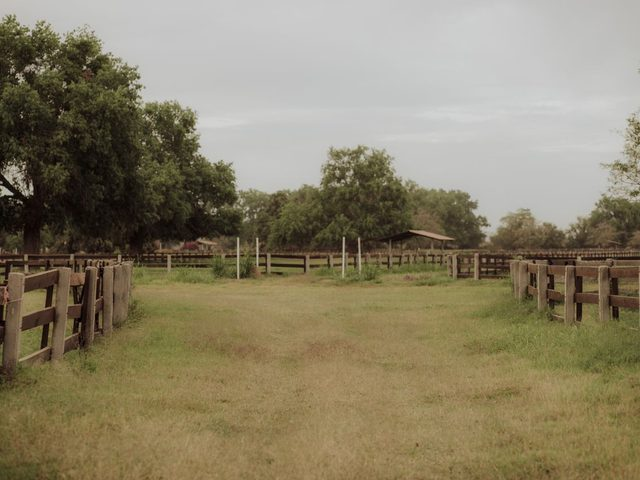
fence
籬笆；圍牆n.
The dog jumped over the fence.
那隻狗跳過了籬笆。
那隻狗跳過了籬笆。

garage
車庫n.
Dad parks the car in the garage.
爸爸把車停在車庫。
爸爸把車停在車庫。
單字 5–8

hall
大廳；會堂；走廊n.
The school concert is in the hall.
學校音樂會在大禮堂舉行。
學校音樂會在大禮堂舉行。

ceiling
天花板n.
There is a big fan on the ceiling.
天花板上有一個大吊扇。
天花板上有一個大吊扇。
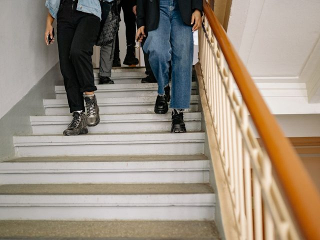
downstairs
在樓下；往樓下adv.
Breakfast is ready. Come downstairs!
早餐好了，下樓來吧！
早餐好了，下樓來吧！

roof
屋頂n.
A cat is sleeping on the roof.
一隻貓在屋頂上睡覺。
一隻貓在屋頂上睡覺。
單字 9–12

upstairs
在樓上；往樓上adv.
My bedroom is upstairs.
我的房間在樓上。
我的房間在樓上。
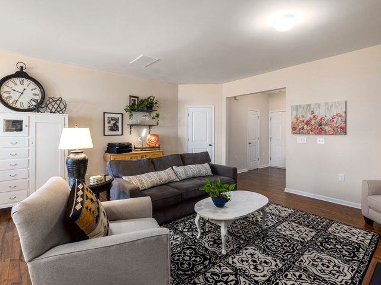
furniture
家具n.
We bought some new furniture for the living room.
我們幫客廳買了一些新家具。
我們幫客廳買了一些新家具。

armchair
扶手椅n.
Grandpa is reading in his armchair.
爺爺坐在扶手椅上看書。
爺爺坐在扶手椅上看書。
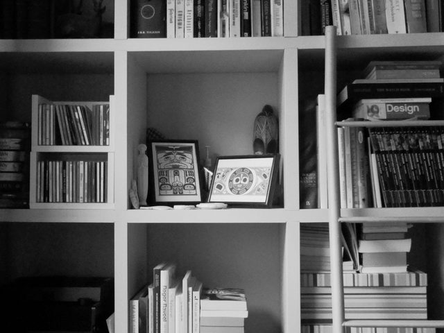
bookcase
書架；書櫃n.
The bookcase is full of comic books.
書櫃裡塞滿了漫畫書。
書櫃裡塞滿了漫畫書。
單字 13–16

closet
衣櫥；壁櫥n.
Hang your jacket in the closet.
把你的外套掛進衣櫥。
把你的外套掛進衣櫥。

curtain
窗簾；布幕n.
Please close the curtains. The sun is too bright.
請把窗簾拉上，太陽太刺眼了。
請把窗簾拉上，太陽太刺眼了。

faucet
水龍頭n.
Turn off the faucet when you brush your teeth.
刷牙時要把水龍頭關掉。
刷牙時要把水龍頭關掉。
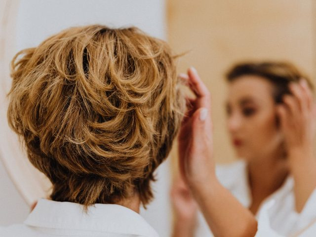
mirror
鏡子n.
She looked at herself in the mirror.
她看著鏡子裡的自己。
她看著鏡子裡的自己。
單字 17–20

shelf
架子；擱板n.
Put the cups on the top shelf.
把杯子放在最上層的架子上。
把杯子放在最上層的架子上。
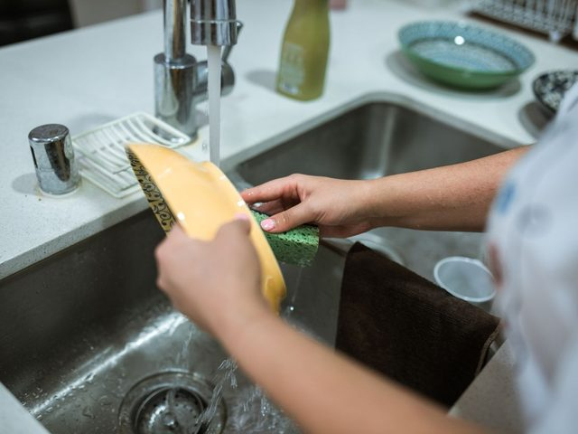
sink
水槽；洗手台；下沉n. / v.
Put the dirty dishes in the sink.
把髒碗盤放進水槽。
把髒碗盤放進水槽。

tub
浴缸；桶；盆n.
The baby is playing in the tub.
寶寶在浴缸裡玩。
寶寶在浴缸裡玩。
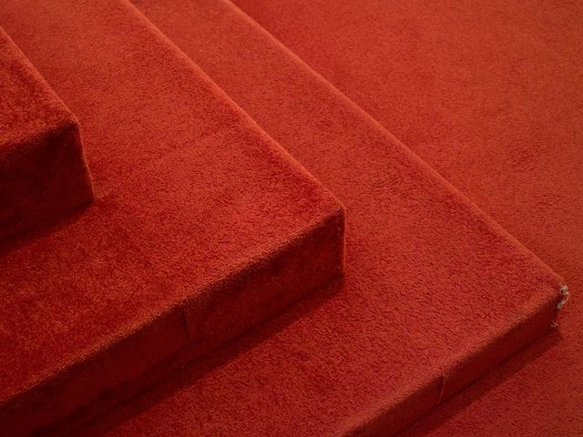
carpet
地毯n.
Don't spill juice on the carpet.
別把果汁灑在地毯上。
別把果汁灑在地毯上。
單字 21–24
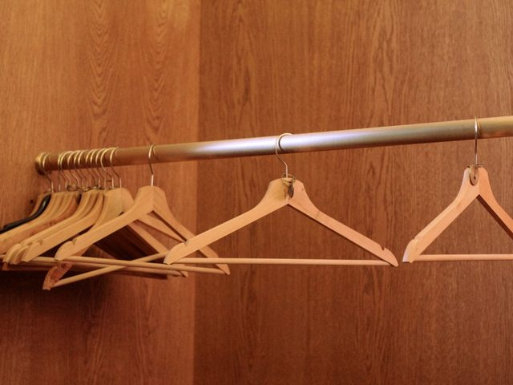
hanger
衣架；掛鉤n.
Put your shirt on a hanger.
把你的襯衫掛在衣架上。
把你的襯衫掛在衣架上。

pillow
枕頭n.
We had a pillow fight at the sleepover.
我們在過夜派對上玩枕頭大戰。
我們在過夜派對上玩枕頭大戰。
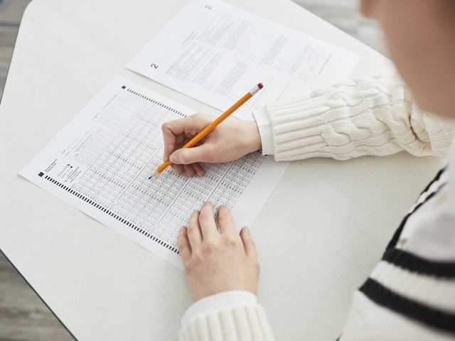
sheet
一張（紙）；床單n.
Write your name on the answer sheet.
在答案卷上寫你的名字。
在答案卷上寫你的名字。

toothbrush
牙刷n.
Change your toothbrush every three months.
每三個月換一支牙刷。
每三個月換一支牙刷。
單字 25–28
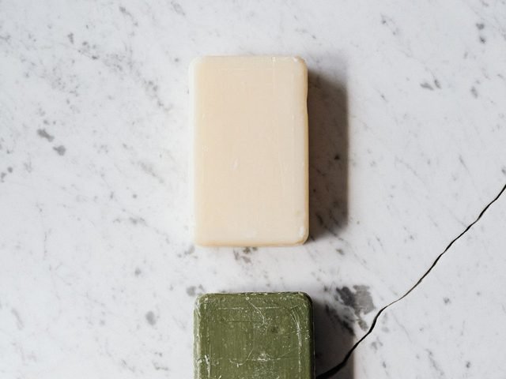
soap
肥皂n.
Wash your hands with soap and water.
用肥皂和水洗手。
用肥皂和水洗手。

air conditioner
冷氣機n.
It's so hot. Turn on the air conditioner.
好熱，開冷氣吧。
好熱，開冷氣吧。
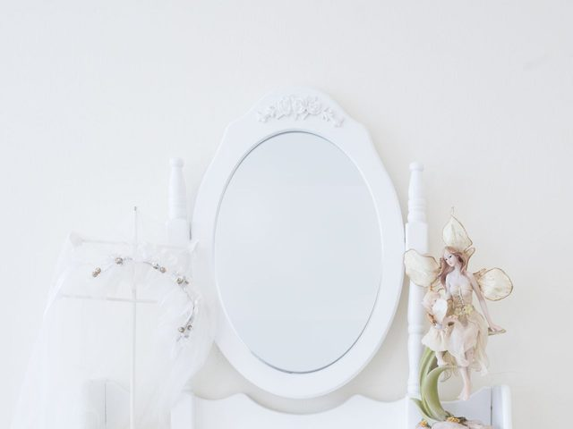
dresser
梳妝台；五斗櫃n.
Her hairbrush is on the dresser.
她的梳子在梳妝台上。
她的梳子在梳妝台上。

dryer
吹風機；烘乾機n.
Dry your hair with the hair dryer.
用吹風機把頭髮吹乾。
用吹風機把頭髮吹乾。
單字 29–32
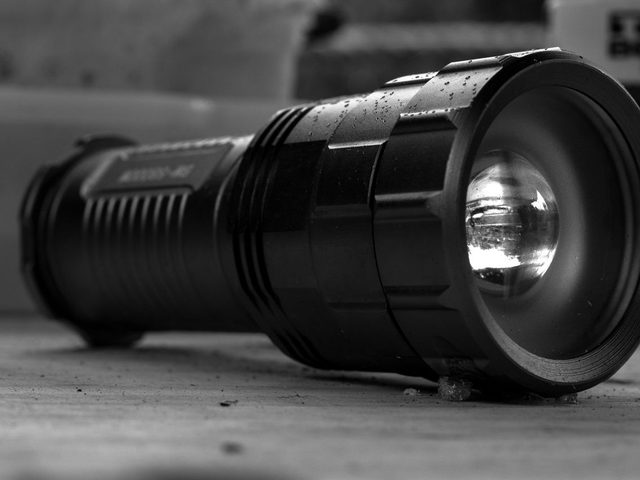
flashlight
手電筒n.
Take a flashlight in case the power goes out.
帶支手電筒，以防停電。
帶支手電筒，以防停電。
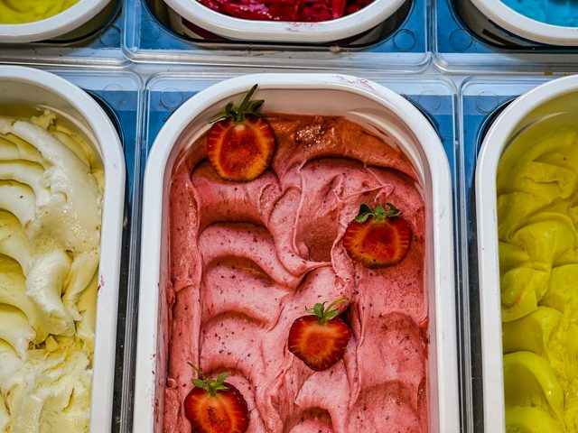
freezer
冷凍庫n.
The ice cream is in the freezer.
冰淇淋在冷凍庫裡。
冰淇淋在冷凍庫裡。

heater
暖氣機；加熱器n.
Turn on the heater. It's freezing.
開暖氣吧，好冷。
開暖氣吧，好冷。

microwave
微波爐n.
Heat the milk in the microwave for one minute.
把牛奶放進微波爐熱一分鐘。
把牛奶放進微波爐熱一分鐘。
單字 33–36
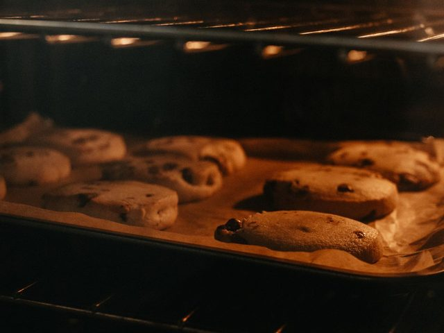
oven
烤箱n.
The cookies are baking in the oven.
餅乾正在烤箱裡烤。
餅乾正在烤箱裡烤。

speaker
喇叭；音響；說話者n.
Turn up the speaker. I can't hear the music.
把喇叭開大聲一點，我聽不到音樂。
把喇叭開大聲一點，我聽不到音樂。
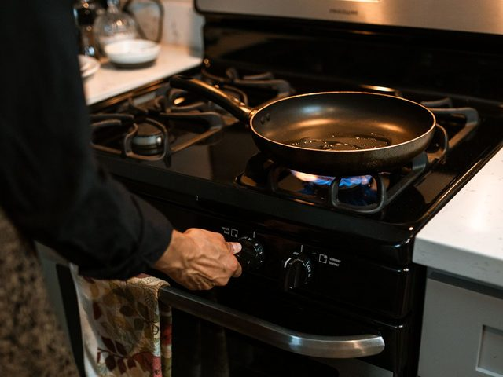
stove
爐子；火爐n.
The soup is on the stove.
湯在爐子上。
湯在爐子上。

printer
印表機n.
The printer is out of paper.
印表機沒紙了。
印表機沒紙了。
單字 37–40

brick
磚塊n.
The old house is made of red bricks.
那棟老房子是紅磚蓋的。
那棟老房子是紅磚蓋的。
🪣
bucket
水桶n.
Fill the bucket with water to wash the car.
把水桶裝滿水來洗車。
把水桶裝滿水來洗車。

hammer
鐵鎚；用鎚子敲n. / v.
Dad used a hammer to fix the chair.
爸爸用鐵鎚修椅子。
爸爸用鐵鎚修椅子。
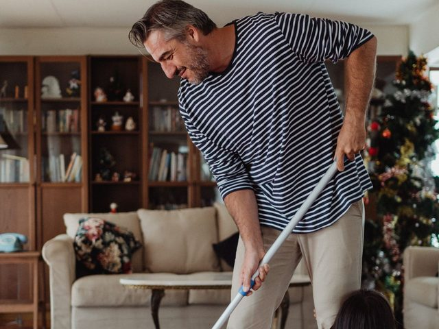
housework
家事n.
We all help with the housework on weekends.
我們週末都會幫忙做家事。
我們週末都會幫忙做家事。
單字 41–44

mat
墊子；地墊n.
Wipe your feet on the mat.
在地墊上把腳擦乾淨。
在地墊上把腳擦乾淨。

needle
針n.
Grandma sews buttons with a needle and thread.
奶奶用針線縫扣子。
奶奶用針線縫扣子。

pan
平底鍋n.
Fry the egg in a pan.
用平底鍋煎蛋。
用平底鍋煎蛋。
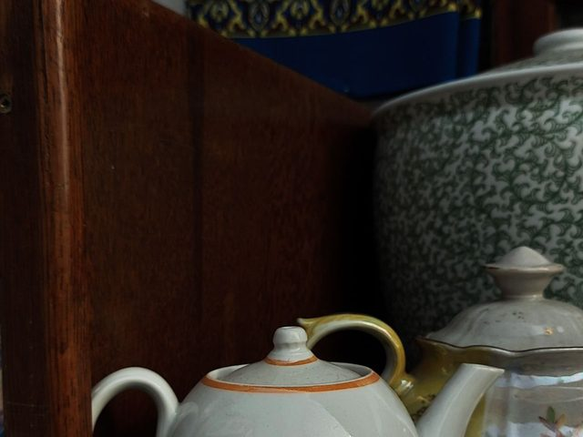
teapot
茶壺n.
Grandpa makes tea in a small teapot.
爺爺用小茶壺泡茶。
爺爺用小茶壺泡茶。
單字 45–48
🚽
toilet
馬桶；廁所n.
Don't forget to flush the toilet.
別忘了沖馬桶。
別忘了沖馬桶。

trash can
垃圾桶n.
Throw the paper in the trash can.
把紙丟進垃圾桶。
把紙丟進垃圾桶。
wok
炒菜鍋n.
Mom cooks fried rice in a wok.
媽媽用炒菜鍋炒飯。
媽媽用炒菜鍋炒飯。

tube
軟管；管子n.
We need a new tube of toothpaste.
我們需要一條新牙膏。
我們需要一條新牙膏。
單字 49–52

decorate
裝飾；布置v.
We decorated the tree for Christmas.
我們為聖誕節布置聖誕樹。
我們為聖誕節布置聖誕樹。

design
設計v. / n.
She designed her own T-shirt.
她設計了自己的 T 恤。
她設計了自己的 T 恤。

repair
修理v.
Can you repair my bike?
你可以修我的腳踏車嗎？
你可以修我的腳踏車嗎？

sweep
掃（地）v.
Please sweep the floor after dinner.
晚餐後請掃地。
晚餐後請掃地。
單字 53–53
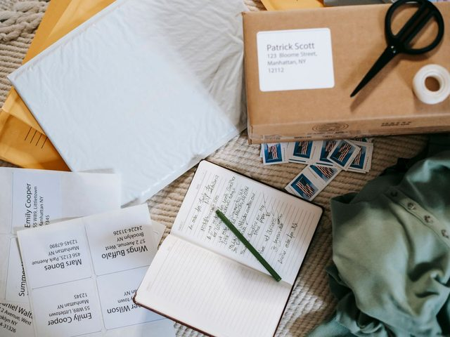
address
地址n.
Please write your address on the card.
請在卡片上寫你的地址。
請在卡片上寫你的地址。
-er 結尾的家電和工具
| 動詞 | 東西 |
|---|---|
| heat 加熱 | heater 暖氣機 |
| freeze 冷凍 | freezer 冷凍庫 |
| dry 弄乾 | dryer 吹風機 |
| print 列印 | printer 印表機 |
| hang 掛 | hanger 衣架 |
動詞加 -er 可以變成「做這件事的東西或人」。
容易錯的數法
| 字 | 說法 |
|---|---|
| furniture（不可數） | a piece of furniture |
| soap（不可數） | a bar of soap |
| shelf | shelves（複數） |
| sweep | swept（過去式） |
快問快答：中文 → 英文
1建築物；大樓building
2車庫garage
3在樓下；往樓下downstairs
4家具furniture
5衣櫥；壁櫥closet
6鏡子mirror
7浴缸；桶；盆tub
8枕頭pillow
快問快答：英文 → 中文
1soap肥皂
2dryer吹風機；烘乾機
3heater暖氣機；加熱器
4speaker喇叭；音響；說話者
5brick磚塊
6housework家事
7pan平底鍋
8trash can垃圾桶
學完了！接下來
複習方法
review
- 回到「📗 單字卡」，按「遮中文」自己考自己
- 再按「遮英文」，看中文說出英文
- 每個例句跟著 🔊 唸一次
準備好了
- 按右上角「📝 前往測驗」
- 測驗錯的題目要訂正到全對
- 訂正完成補送 1 點